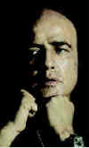
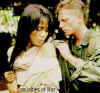
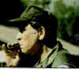
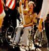
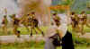

|
Vietnam: The Hollywood Pariah
By Stuart J. Kobak
Click on thumbnails for larger images.
It insinuated itself into our consciousness. We weren't there at all really. Just a few disparate advisors helping the locals cope after the transition from French colonial rule. Some transition. The Vietnamese threw the French out after decades of colonial subjugation, climaxing in a blood bath of the French Expeditionary Force at Dien Bien Phu. The fate of
the French should have been indication enough that the Vietnamese needed to rule their own turf and settle their own internal differences. Who knows what prompted the decision to slowly increase our involvement in Indochina.
Well, it seems that the handful of advisors just weren't quite up to the job of guiding Vietnam to a new era of peace. We began sending in larger pockets of troops to support the South Vietnamese effort against the communist North. The numbers of Americans in Vietnam somehow mounted without our actually engaging in war. When Johnson was elected to office after the Kennedy assassination, the build-up of
trained soldiers intensified until we found ourselves in a confused and unpopular war. On the home front people could not understand our presence in Vietnam and what we were fighting to preserve. We had been seduced by the forces of darkness into a no win situation.  The military forces were forced to fight a one-handed battle in Vietnam,
the other hand doing battle on the domestic political front. We were at war, sort of, but not quite all out. From not really being in Vietnam we were their in force doing most of the battle. The South Vietnamese Army, preservers of freedom, fell under the shadow of big brother America.
What's it all have to do with the movies. The war, unpopular with the public, didn't seem like the best fare to present for commercial box office digestion. If the public didn't want the war, the movie moguls reasoned, why would they want to see movies about the war. The Vietnam War was the first major military engagement of the television era. Once the military machine revved up its
powerful engines through the beaches and jungles of Vietnam, the images of the war found prime space on the television airwaves. On any given day you could turn on the tube and catch the Vietnam show. The last thing the public was looking for was a Vietnam movie. This wasn't World War II. We weren't out there fighting the fight of the righteous. During the Second World War, Hollywood was cranking out war movies every week. The film
companies were well prepared since we didn't enter the war until the end of 1941 and the war had been raging in Europe and Asia for almost three years in various stages. There was no popular cause to get behind. The movie studios played it commercially close to the vest.  When we finally got to the point that we weren't really in
Cambodia, only we were, and domestic and international pressures threatened to blow the top off the pressure cooker, the Vietnam War came to a shattering close and the powerful United States left Indochina with its proverbial tale between its legs.
The war may have come to an end, but the idea of a Vietnam War movie was still not earmarked for the top of the commercial crop. A number of films began to come to explore with the realities and problems of the returning Vietnam vets, but these mostly portrayed the returnees as misfits or psychos irreparably damaged by the ravages of this senseless war. It wasn't
until 1978 that Hollywood came to grips with the Vietnam War big time with the release of The Deer Hunter. Although The Deer Hunter is not purely a war movie, I have always viewed it as a seminal Vietnam film. The most searing action takes place in Vietnam, branding its audience with the indelible mark of the pain of the war. This
magnificent film deals with the war on mythic terms, basing almost its entire Vietnam scenario on the contest of Russian Roulette that take place first amongst the prisoners captured by the North Vietnamese in the Northern jungle and then later in the back alleys of Saigon and its seedy environs. In some perfect yet mystical way, the deadly game comes to symbolize the war. For each continuing moment we remained in Vietnam, the
bullet was waiting to click into the chamber that lined up with the barrel of the gun, blowing apart any rational for our involvement in Indochina.
Released in 1978, The Deer Hunter was not the only Vietnam movie to make it to the big screen that year, defying the conventional Hollywood wisdom that prevailed up until that time. Go Tell the Spartans, a relatively small movie which starred Burt Lancaster , was in and out of theaters before you could say Geronimo. Though it received excellent critical response, it seemed to prove the Hollywood mavens right in that it created little interest in the market place. Another Vietnam movie, The Boys in Company C also found its way into theaters, but its confused tone dismissed it before it has a chance to catch on with the public.
While The Deer Hunter can be considered the ultimate mythic Vietnam war movie, Go Tell the Spartans certainly deserves the right to be called the most cynical film to deal with the war. The Deer Hunter treated the war in its latter stages, while Go Tell the Spartans, set in 1964 before our big
military build-up, presaged the eventual realization of the futility of our attempt to capture the hearts and minds of the Vietnamese. The cynical tone and downbeat ending of this film, while viewing Vietnam with extraordinarily acuity, was difficult for audiences to swallow. We were so confused about Vietnam. The Deer Hunter succeeded astounding well because it did not deal with the
realities of the war but created it own central image. In some ways it was also a very patriotic film that did not force the public to make a direct confrontation with the mistakes of the Vietnam years.
Apocalypse Now is another seminal Vietnam movie. While The Deer Hunter may have won all the awards the previous year, the monstrous undertaking of Coppola's movie was a significant achievement in and of itself; and this movie is pure Vietnam, an undiluted tank full of mind blowing napalm. Apocalypse Now is the perfect evocation of the insanity
of and absurdity of war. Whether or not the events depicted in the film bare any relation to truth or accuracy makes little difference. The film distills the very essence of the insanity into its purest form.
As the years distanced the public and Hollywood from the reality of the Vietnam war and from the financial debacle of Apocalypse Now, a window of opportunity presented itself for Oliver Stone to attempt a small budget project that reflected his own experiences as a Vietnam dog soldier. This was to be Stone's third film as director in a dozen years during
which his greatest successes were as a screenwriter of Scarface and Midnight Express. He had been hoping to make this film for a number of years, but the trepidation of Hollywood toward Vietnam had continued. Oliver Stone's screenplay for Platoon had been floating around for almost a decade and there had been no takers willing to fund the
picture. In some ways we are all lucky that Stone did not get to make Platoon when he first wanted to since the resultant film is a remarkably mature and confident achievement that reflects his years of experience at the Hollywood game.
Platoon, released in 1986, is the purest of the Vietnam war movies. This seminal film deals with Vietnam on the level of reality. This is the war. It's the greatest of the Vietnam movies and one of the great all time movies depicting war. Platoon is the fourth point on the seminal compass of Vietnam films. If Go
Tell the Spartans can lay claim to being the most cynical of Vietnam films, The Deer Hunter the most mythical, and Apocalypse Now the movie that frames for all time the insanity of war, Platoon surely presents sharpest realization of the day to day soldiering in the boonies of Vietnam. When the 1986 Academy Awards were handed out, once again a seminal Vietnam movie won
the award for Best Picture. It was also handed the statue for Best Director, Best Film Editing and Best Sound. In all. Platoon garnered a total of eight nominations. 
It appears that the success of Platoon combined with years of distance from the reality of the Vietnam war would have opened Hollywood to a more comfortable attitude toward the war that nobody wanted. A good Vietnam script has as good a chance as any other to find the financial backing needed to forge a script into a film. Stanley Kubrick guided his lens through a
look at the war in the 1987 film, Full Metal Jacket. Barry Levinson's Good Morning, Vietnam featured Robin Williams as an Armed Forces Radio disc jockey broadcasting from Vietnam. Films like Bat 21, 84 Charlie Mopic, The Hanoi Hilton, Hamburger Hill, and Casualties of War made their way to local theaters. After Platoon, Stone went on to complete
a trilogy of Vietnam movies with the making of Born of the Fourth of July and lastly,  Heaven and Earth. None of these however have the same sense of importance as those four seminal films on the Vietnam compass.
|
|
|
|

Selections from the feature archive include articles on Akira Kurosawa, Frank Darabont, Blonde Bimbos, Hollywood
Street Gangs, or Vietnam: The Hollywood Pariah, and many more....
The Exquisite Muse of Zhang Yimou

The powerful image-making of Zhang Yimou has revealed itself in virtually every film he has made. Coupled with his remarkable collaboration with actress Gong Li, Zhang's has built a stunning body of work Click the image to read all about it.

Movie Rage: Death in the Aisles
Everyone knows what it feels like to get angry at the movies these days. Here's a humorous but not so delightful view of big screen misery.
Film noir: The phrase hangs awkwardly on the tongue, shadowy images peek out from behind half-closed doors. Click on the Noir and Noir Again symbol for a look into the dark spaces of Hollywood's revisiting of film noir.
Robert A. Harris

Tilting at Hollywood
He's part of the dynamic duo that restored Lawrence of Arabia, Spartacus, My Fair Lady and Vertigo. Harris rides a white horse into the for the cause of preserving our film legacy. Click on the image to read more.

The Movie Poster Archive includes extensive poster images from the films of stars like Susan Hayward, Kirk Douglas, Katharine Hepburn and many more. Our featured star is Kirk Douglas.
 
DVDPlanet is the DVD incarnation of legendary laser retailer Ken Crane's. Deep discounts and serious service.
 Direct from the corridors of the Home Theater Forum, Home Theater Talk is the newest place on the Net to discuss everything home theater. Friendly atmosphere and knowledgeable folks are the secret ingredients. Direct from the corridors of the Home Theater Forum, Home Theater Talk is the newest place on the Net to discuss everything home theater. Friendly atmosphere and knowledgeable folks are the secret ingredients.
 DVD Informix is a British site providing a variety of DVD information, including lots of DVD software. Check it out from articles to links. DVD Informix is a British site providing a variety of DVD information, including lots of DVD software. Check it out from articles to links.
 Black DVD Online is a new site dedicated to black film content on DVD. The commendable enterprise is hosted by Webmaster Samuel L.
McLemore, Jr. and presented in an attractive interface Black DVD Online is a new site dedicated to black film content on DVD. The commendable enterprise is hosted by Webmaster Samuel L.
McLemore, Jr. and presented in an attractive interface

Fine reviews, features and news on DVD. The Big Picture has been doing DVD as long as anyone. Jeff McNeal and Bob Banka feed on a steady diet of DVDs.

The official site for information about the great comic director. A treat for connoisseurs of classic Hollywood madcap.

The home of director Kevin Smith, replete with inside info on his films like Clerks, Mall Rats, Chasing Amy and Dogma.

First Run Features boasts a library of independent and foreign features available on DVD and VHS. Check out their web site for catalog details.

Ask Digital Man is the web's only 24-hour, totally FREE source for all your home theater, DVD, Dreamcast, PC, and Networking tech support needs!

Venerable electronics industry magazine with excellent online selections from their hard book.

Now a major independent DVD distributor, Image has parlayed its laser disc business to success. Great DVD release calendar info.

DVD links, information about Web specials, news, Site reviews.

DVD Reviews and more. The credo behind DVD Angle is "we cater to no one, and we call it as we see it."

DVD King does the retail thing these days selling DVDs.

Looking for information about widescreen movies and hardware. The Widescreen Movie Center is the place to go.

The National Film Preservation Foundation (NFPF) is the nonprofit organization created by the U.S. Congress to save America's film heritage.

An elegantly presented fan site dedicated to one of Hollywood's great action stars.
culturevulture.net
More than just candid film reviews, culturevulture looks at art, theater, dance and more. Worth a visit and a bookmark

ReelUniverse.com is the home of the true Indies. You will find links to many independent filmmakers selling VHS copies of their films that have not yet gotten commercial release. None of the filmmakers represented on the site have DVD product available, but here's hoping.
 
The Big Combo has style to spare in reviewing films and producing feature articles. Check out their special "Lingo" section.

Reviews of affordable remote controls in the market place. Codes and tips as well.
|